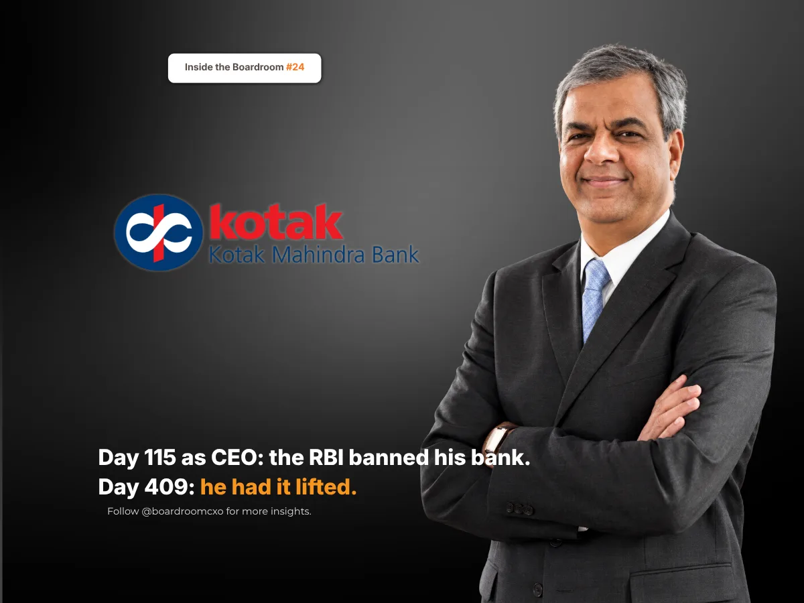

Key Takeaways
- On 24 April 2024, Ashok Vaswani's 115th day as CEO, the RBI barred Kotak Mahindra Bank from onboarding customers online and issuing new credit cards, over IT failures its examinations had found in 2022 and 2023.
- The shares fell up to 13% the next day, nearly ₹40,000 crore of market value went, and Axis Bank overtook Kotak as India's fourth most valuable bank. Vaswani did not blame his predecessors; he worked on the fix with the regulator.
- The RBI lifted the curbs on 12 February 2025, day 409. Boards should judge a leader who inherits a regulatory problem on how fast and how quietly it gets fixed, not on who caused it.
On 24 April 2024, the Reserve Bank of India ordered Kotak Mahindra Bank to stop onboarding new customers through its online and mobile channels and to stop issuing new credit cards, with immediate effect.
It was Ashok Vaswani's 115th day as the bank's chief executive.
Who Is Ashok Vaswani?
Ashok Vaswani is the managing director and chief executive of Kotak Mahindra Bank. He took over on 1 January 2024 from Uday Kotak, who founded the bank and ran it for nearly four decades. Vaswani was brought in from outside, after a career that included senior leadership roles at Citi and Barclays.
He had less than four months in the job before the regulator acted.
What the RBI Did, and Why
The RBI acted under Section 35A of the Banking Regulation Act. It cited serious concerns from its IT examinations of the bank for 2022 and 2023, covering areas such as IT risk management and information security, which it said the bank had not fixed. A major outage of the bank's core banking and digital channels on 15 April 2024 came just before the order.
Existing customers, including credit card holders, could keep using their accounts. But for a bank that had built much of its recent growth on digital onboarding, the order cut off the main way it added new customers.
The market's answer came the next morning. Kotak's shares fell up to 13% on 25 April, nearly ₹40,000 crore of market value went in a day, and Axis Bank overtook Kotak as India's fourth most valuable bank.
What He Did Instead of Explaining Whose Fault It Was
The failures the RBI cited came from examinations of 2022 and 2023, before Vaswani joined. He had the easiest defence available to any new chief executive: this happened before me.
He did not use it. In a letter to customers the next day, he wrote that the bank was "actively working to address the concerns raised" and was in constant communication with the regulator.
Then the bank did the slow, unglamorous work. It rebuilt the IT systems and controls the RBI had flagged, and an external audit, commissioned with the RBI's prior approval, checked that the fixes held. Branches kept opening accounts while the digital doors stayed shut.
On 12 February 2025, satisfied with the bank's submissions, the remedial measures and the audit, the RBI lifted the curbs. It was day 409 of Vaswani's tenure.
The results followed. For the January to March 2026 quarter, Kotak reported a standalone net profit of ₹4,027 crore, up 13.4% from a year earlier, as provisions fell sharply.
In June 2026, Vaswani announced that he would not seek reappointment when his term ends on 31 December 2026, citing personal reasons. The bank has begun the search for his successor.
The Boardroom Lesson: You Inherit the Problem the Day You Take the Job
A new leader's first instinct is to draw a line between the old regime and the new one. Sometimes that line matters. But a regulator does not care which chief executive caused the problem. It cares who fixes it, and how fast.
A regulator's ban is a verdict on the past. What a bank does next is the only verdict that counts.
Vaswani treated the ban as his problem from the first day, and the fix as his job. That is why the story ends on day 409, not on day 115.
Common Mistakes Boards Make When a New CEO Inherits a Regulatory Problem
Boards of banks, NBFCs and other regulated businesses tend to make the same three errors when the regulator acts early in a new leader's tenure.
They let the new leader blame the past in public. It may be accurate, but it tells the regulator and the market that the bank is still arguing about the problem instead of fixing it.
They judge the leader on the share price in the first month. The fall on day 116 was about the order, not about the new chief executive. The fair measure is how long it takes to get the order lifted.
They treat technology and compliance as someone else's department. The RBI's concerns were about IT risk and information security. In a modern bank, those sit at the top table, and so do the people who run them.
A Framework for Hiring a Leader Into a Regulated Business
When we brief boards on a CXO search for a bank, NBFC, insurer or fintech, we push for three specific checks.
- Ask how the candidate handled an inherited problem. Look for leaders who owned what they walked into and fixed it, not ones whose story is mainly about what the last team got wrong.
- Check their record with regulators. The best leaders in regulated businesses keep the regulator informed before it has to ask. Ask referees how the candidate behaved when the regulator was unhappy.
- Hire technology and risk leaders at the same level as the business heads. Kotak's curbs were an IT governance problem. The CTO, CISO and chief risk officer need the standing to stop growth when the systems cannot carry it.
Why This Belongs in the Boardroom, Not Just the Business Pages
This sits alongside the story we told of Suresh Narayanan at Nestlé India: another leader who walked into a regulator's ban he had not caused, and was judged on how he got the business back, not on how it got there.
A ban tells you what went wrong before. The leader's answer tells you what happens next.
Sources
- Business Today, Kotak Mahindra Bank shares in focus as RBI bars onboarding new customers online, fresh credit cards, April 2024
- ThePrint (PTI), Kotak Mahindra Bank shares tank nearly 12 pc; mcap erodes by Rs 39,768 cr post RBI action, April 2024
- Business Today, Axis Bank pips Kotak Mahindra Bank to become 4th most-valued bank, April 2024
- NDTV Profit, Kotak Mahindra Bank Chief Reassures Customers After RBI Whip On Key Services, April 2024
- Business Standard, RBI lifts restrictions on Kotak Mahindra Bank on onboarding new customers, February 2025
- Business Today, Kotak Mahindra Bank Q4 results: dividend announced, check earnings summary, May 2026
- Business Today, Kotak Mahindra Bank CEO Ashok Vaswani to step down in December; board begins succession hunt, June 2026
Related Reading
Suresh Narayanan: The MD Who Walked Into the Maggi Ban
Read → R · 02 Founder Leadership · September 2026Anish Shah: The Outsider Who Fixed Mahindra's ₹5,200 Crore Problem
Read → R · 03 Founder Leadership · August 2026Bharat Puri Heard About the Cadbury Worms From TV News. He Fixed It in Three Months.
Read →Hiring for a bank, NBFC or regulated business where the next leader may inherit a problem?
We screen for leaders who own an inherited problem and fix it quietly with the regulator, not ones who explain whose fault it was. Brief us on your next CXO mandate and we will tell you what the market actually has to offer.
Brief Us on a Mandate See all Finance & CFO roles we fill →